Kabita Live
Issue 43
May 2026
Browse poemsRoom for water
The vessels wait without knowing what they will hold. One may carry drinking water, another a flower, another only the coolness of a shaded room. Clay has already learned the shape of receiving. The potter's hands are absent, but their patience remains in every rounded shoulder.
Cultural connection
Everyday earthenware and the labour of pottery; no specific craft cluster is claimed for this imagined scene.
Reader tools
Language
Text size
Choose a language for the titles and the poems you open.